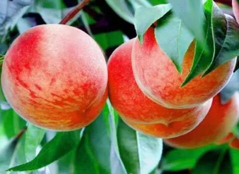

桃子的家族庞大，你吃过几种？
桃子在全世界有3000多个品种，中国约有品种800个，桃子品种有油桃、蟠桃、寿星桃、碧桃、扁桃、毛桃等。
其中蟠桃，以其形美、色艳、味佳、肉细、皮韧易剥、汁多甘厚、味浓香溢、入口即化等特点而驰名中外，主要分布在山东、新疆、山西、甘肃、河北、陕西等地。

在古代神话中蟠桃是一种仙桃，据《论衡·订鬼》引《山海经》:“沧海之中，有度朔之山 ，上有大桃木，其蟠屈三千里。”又据《太平广记》卷三引《汉武内传》载:“七月七日， 西王母降，以仙桃四颗与帝。帝食辄收其核，王母问帝，帝曰:“欲种之。” 王母 曰:“此桃三千年一生实，中夏地薄，种之不生。”帝乃止。”由此可见，在古代神话中，潘桃树是一种能活千年的树，而蟠桃树结的果，人们吃了就会长生不老。
然而在现代中蟠桃是一种营养价值很高的水果，含有蛋白质、脂肪、糖、钙、磷、铁和维生素B、C等成分。花园蟠桃果形独特，个大鲜艳，肉质细腻，甘甜可口，味道鲜美，果实中富含多种营养成份，食用后可以补心活血、清热养颜、润肠通便、帮助消化，深受消费者喜爱。而盆栽蟠桃，不但美化环境，而且春花秋实，具观赏与食果双重作用。一般说来蟠桃比普通的桃更有营养。常说的桃养人就是体现在它的营养价值疗效。
除了潘桃，寿星桃也有观赏价值。寿星桃一般有大红、粉红、白色、复色等品种。如将几种嫁接在一起，开花时五彩缤纷，十分艳丽。花后结果，8、9月成熟时有一纵向裂口，是春观花，夏秋赏果的优良观赏花木。很多桃树盆景爱好者，一般都选用寿星桃，清初园艺学家陈淏子在《花镜》中记载：“寿星桃树矮而千叶，实大，可作盆玩。”，可见寿星桃制作盆景历史悠久。而且寿星桃盆景株型矮小，枝干苍劲，蜿蜒曲折；花色艳丽，妩媚诱人；果实形状各异，色泽鲜红，散发出缕缕清香，令人陶醉。
除了这两种桃，在市场上我们常见的就是毛桃，毛桃原产中国北方中部，各地广泛培植，中国南北各地多有栽培，其中以华北地区、川渝地区最为常见。野生生长于海拔500-800米的山坡和溪边的灌木丛中。
 上一篇
上一篇